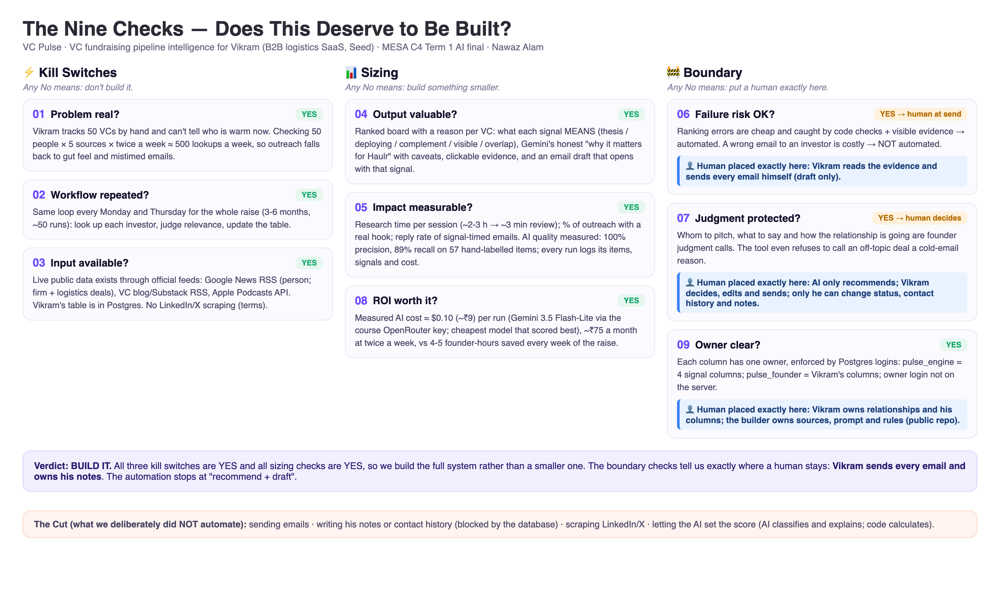
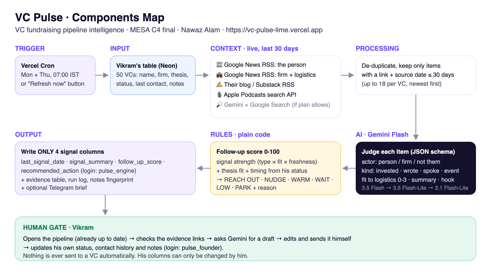

VC Fundraising Pipeline Intelligence for Vikram: the problem, the options we weighed, what we built, how we checked it, and every viva question we could think of. Written for someone new to AI.
| Rubric line (weight) | What the examiner looks for | Our evidence |
|---|---|---|
| Components Map (10) | The parts of the system and how they talk to each other | Swimlane map in the course format: 6 actors (Founder, Scheduler, System, Live data, Gemini, Database) × 6 stages (Trigger → Input → Context → Processing → AI → Output), arrows for every data flow, the human gate visible (section 4) |
| Working Vercel link (10) | Opens, works, has real data at submission | vc-pulse-lime.vercel.app: 50 real investors, live signals, refreshed twice a week by cron and on demand; every page and endpoint re-tested on 12 Oct |
| Design (10) | Clear, usable, looks professional | 4-step "how it works" strip; 4 action lanes; evidence drawer with "why it matters"; live evidence feed; blue/purple column ownership; keyboard + mobile support; loads in under 1 s |
| Backend logic & build quality (25) | Hard level: multi-step system, tool/API use, backend logic, technical trade-offs, reliability | 8-step pipeline; 5 external sources + Gemini (via the course OpenRouter gateway) + Postgres; signal-meaning model with code-verified AI; least-privilege logins; run lock + HMAC tickets; source/AI failure handling; cron time budget; 23 rule tests + 26 permission tests + accuracy evaluation (100% precision) |
| Demo video (5) | Shows the solution working | 2:45 narrated walkthrough of the live app, including a real refresh, the evidence, the email draft and the database refusing to overwrite notes |
| Viva (40) | You understand and can defend every decision | This guide: the problem, the options we rejected, every safeguard, the maths, the accuracy numbers, 45 practice questions |
| Requirement | How VC Pulse meets it | Show it in the demo |
|---|---|---|
| 1. Real information: actual investor activity from the past 30 days, not fictional examples | 50 real, verified investors. Signals come only from live public sources (Google News RSS, their blog/Substack RSS, Apple Podcasts); each keeps its real URL and the source's own date; anything older than 30 days is dropped; the evidence must name the investor. | "Latest live evidence" feed and the evidence list in any drawer: click a link |
| 2. Intelligent analysis: Gemini Flash explains why a signal matters to the founder | Gemini Flash decides what each signal MEANS for Haulr (🎯 thesis, 🚀 deploying, 🤝 complement, 👀 visible, ⚠️ overlap), writes an honest "Why it matters for Haulr" that states what the signal does and doesn't prove (with caveats such as "US-only mandate" or "consumer deal, not logistics"), flags geography/stage fit and direct competitors, and writes the hook and email draft. | 💡 "Why it matters for Haulr" box in the drawer and on hot/warm cards |
| 3. Useful recommendations: prioritised by relevant evidence, not random scores | Score = signal meaning × topic fit × who acted × freshness, plus thesis fit, India/seed fit (Gemini's caveats change the score) and timing from Vikram's own status; shown line by line. A cold REACH OUT needs a logistics hook; a NUDGE needs a timely one. 42 rule tests. | "🧮 Why 59/100" box in the drawer |
| 4. Safe database updates: only the 4 signal fields change | Postgres column privileges: the engine login can update only last_signal_date, signal_summary, follow_up_score, recommended_action; MD5 fingerprint before/after every run; 26 permission tests. | Notes guard tab → "Attack my own database" |
| 5. A working application: Vercel URL, GitHub repo, Components Map | Live URL, public repo with auto-deploy, swimlane Components Map PNG, Nine Checks PNG, demo video, all downloadable from /brief#downloads. | Open the link; /brief#downloads |
| Brief says | VC Pulse |
|---|---|
| Twice a week, before work | Vercel Cron, Mon + Thu 07:00 IST (within the hour on the free plan), plus a Refresh button |
| Observable signal, past 30 days | Every signal has a source link + the source's own date; older items are dropped before the AI sees them |
| Wrote / said / invested / appeared | Gemini labels each item with exactly these kinds (plus "in the news") |
| Who to reach out to this week, and why | Score 0-100 + action (REACH OUT / NUDGE / WARM / WAIT / LOW / PARK) + one-line reason + clickable evidence + email draft |
| Who is quiet | PARK, worded by how long they've been quiet (1-year lookback: "quiet for 3+ months since 25 May") and by the relationship ("waiting 60 days too: one light check-in next month, or move on") |
| Table reflects current state each run | Each run rewrites the 4 signal columns for every row from that run's evidence; the dashboard is that table |
| Never overwrite notes / contact history | Postgres column permissions: the engine login physically can't write them; fingerprint proof per run; live "attack" demo |
| "Supabase table" | Neon Postgres (Supabase is also Postgres; same SQL and permissions; switch = 2 connection strings). Reason: the free Supabase slots are used by earlier portfolio apps |
| Option | How it would work | Why we didn't choose it / what would go wrong |
|---|---|---|
| A. Google Alerts + spreadsheet | 50 alerts emailed to Vikram; he reads them and updates the sheet | Still manual; no ranking, no "why", no relationship timing; 50 alerts flood the inbox; nothing updates the table. Doesn't meet "already up to date". |
| B. No-code automation (Zapier/Make) | RSS → AI step → Google Sheet row | Fast to start, but row-update steps typically rewrite whole rows, which risks overwriting notes (the critical rule). Hard to enforce "only 4 columns", to test, to explain the score, or to add guardrails. Paid per task. |
| C. Scrape LinkedIn / X | Pull each VC's posts directly | Richest signal, but against their terms; accounts get banned; brittle (pages change). Ethically and legally weak for a graded project. |
| D. Paid data (Crunchbase / PitchBook APIs) | Structured deals and people data | Expensive, needs approval; covers deals but not "wrote / said / appeared"; not "live" in the way news is. |
| E. "Ask the AI" only (Gemini + Google Search for each VC) | One prompt per VC: "what did they do in 30 days?" | Simplest, but (1) Google Search grounding isn't in the free Gemini plan, (2) the AI may invent dates or links (hallucination), (3) scores would change run to run and be unexplainable. Hard to defend in a viva. |
| F. Autonomous AI agent (LangChain-style) | An agent browses, decides and writes to the database | Over-engineered; unpredictable; slow; an agent with write access could touch the notes. The task is a fixed pipeline, not an open-ended one. |
| ✔ G. Our hybrid pipeline | Official public feeds → Gemini Flash judges each real item (strict JSON) → code checks the AI and calculates the score → database permissions guard the notes | Live, free, legal; every claim has a link; same evidence = same score; the critical rule is enforced by Postgres, not by trust; testable (42 rule tests, 26 permission tests, a 57-item accuracy evaluation); cheap enough to run forever. |

Kill switches (01-03): if any fails, don't build. Sizing (04, 05, 08): is it worth it? Boundary (06, 07, 09): where must humans stay in charge? The Cut is what we deliberately left to Vikram.

pulse_engine login. Evidence, score changes and the run log go to separate tables. A fingerprint of Vikram's columns is taken before and after.| What we ask instead | Weight | Why it predicts a meeting | Code check |
|---|---|---|---|
| 🎯 Thesis: did they say or write they want logistics / supply-chain / transport software? | 42 | An open invitation: they are looking for more deals like Haulr | Must be words, not a deal; the source text must mention logistics, supply chain, mobility or industry |
| 🚀 Deploying: are they writing new early cheques now (new fund, bigger seed cheques, new cohort)? | 34 | Allocation is open at Haulr's stage; counts fully only if in or near logistics | Stake sales / exits are never deploying |
| 🤝 Complement: did they back an adjacent, non-competing company? | 26 | Conviction in the sector plus a partnership or warm-intro angle; not proof of a new slot | - |
| 👀 Visible: are they active on other topics? | 10 | Reachable this week, nothing more | General SaaS/AI writing is downgraded to this |
| ⚠️ Overlap: did they back a direct competitor? | 0 and −15 | Usually a no: they won't fund a portfolio company's rival | Must be an investment naming the competitor |
Two more first-principles rules: fit beats fame (India-based +10, seed/early +5, US-only −15, India appetite unclear −5, later-stage −8, from Gemini's own caveats) and a cold email needs an on-topic reason (REACH OUT requires a logistics hook; "actively investing in other sectors" stays WARM), while a follow-up only needs a timely reason (NUDGE can use "you just expanded your seed programme").
| Step | Value |
|---|---|
| Best evidence | "Peak XV Selects 18 Startups for Latest Surge Cohort, Raises Investment Cap to $5 Mn" (30 Sep) |
| Gemini's reading | actor firm · kind invested · meaning 🚀 deploying · topic fit 1 (startups broadly, not logistics) · geography match · stage match |
| Signal points | 34 (deploying) × 0.6 (general topic) × 0.85 (firm) × 0.87 (12 days old) = 15.1; plus 40% / 20% of two 👀 visible items (his book and a TV interview) → strength 21 |
| Fit | thesis covers B2B software +8 · India-based +10 · invests at seed/early +5 |
| Timing | Vikram pitched him 29 days ago and is waiting + fresh signal → natural nudge +10 |
| Total → action | 21 + 8 + 10 + 5 + 10 = 54: one point below NUDGE (55) → WARM. Honest: Surge proves Peak XV is writing seed cheques in India, not that it wants logistics specifically. |
Runs can differ by a few points (Gemini reads headlines slightly differently each time; earlier the same evidence scored 60 → NUDGE). That's why the board groups investors into lanes rather than treating 54 vs 55 as meaningful, and why every reason is shown.
| Field | Example (live, 12 Oct) | Checked by code? |
|---|---|---|
| Per item: actor, kind, meaning, logistics fit, event, summary | firm · invested · 🚀 deploying · 1/3 · peakxv-surge-cohort · "Peak XV selected 18 startups and raised the Surge cap to $5M" | Yes: names them, author, sale ≠ deploying, thesis must be on-topic, 1 event = 1 |
| Per investor: geography fit, stage fit | Peak XV: match / match · a16z (American Dynamism): mismatch / unclear | India-based investors are never penalised; flags change the score |
| What they did (overall) | "8VC led Gallatin AI's $50M Series A on 9 Oct to digitize logistics." | Only kept items are summarised |
| Why it matters for Haulr | "Point Nine just backed Procuros, an AI-native supply chain platform: proof of appetite for supply-chain SaaS at early stage, and Procuros is a complement, not a rival. Caveat: Europe-focused fund." | Grounding filter removes any sentence naming a company not in the evidence |
| Hook (email opener) | "Saw Peak XV raise Surge checks to $5M on 30 Sep." | Must come from a kept item; never "your" for a firm act |
| Competitor conflict | (none this week) If they just backed a direct competitor: −15 and "lead with how you're different, or skip" | The competitor must be named in kept evidence |
| Email draft (on click) | Cites the real signal; leaves "[your one-line traction here]" | Never sent; never invents traction |
| Action | When | Meaning for Vikram |
|---|---|---|
| 🔥 REACH OUT | score ≥ 55, not contacted yet | Write this week, using the hook |
| 🔥 NUDGE | score ≥ 55, waiting 14+ days for a reply | A real reason for a polite follow-up |
| 🌤 WARM | 35-54 | Active; worth it if you have time |
| ⏳ WAIT | followed up less than 14 days ago | Don't pester; the hook is saved for when the wait is over |
| · LOW | weak, old or off-topic activity | Busy, but not with your space |
| 💤 PARK | no qualifying signal in 30 days | Quiet; worded by how long (3+ months?) and by the relationship |
| Model (via OpenRouter, Google infrastructure) | Thinking | Precision | Recall | Accuracy | Cost for 57 items |
|---|---|---|---|---|---|
| Gemini 3.7 Flash | low | 96% | 85% | 91% | $0.063 |
| Gemini 3.7 Flash | minimal | 100% | 85% | 93% | $0.031 |
| Gemini 3.5 Flash-Lite (chosen) | minimal | 100% | 89% | 95% | $0.013 |
A full live run (50 investors, ~400 items) now takes ~40 seconds and costs ~$0.10-0.13 (≈ ₹9-11), down from $0.51 with Gemini 3.7 Flash at low thinking. 3.7 Flash and 3.8 Flash stay as automatic backups.
How the accuracy test works: we took 57 real items from the live pipeline and labelled each by hand (is it really about this investor or their firm? is it about logistics?). Then we ran them through Gemini plus our code checks (tests/eval_judge.py) and compared. The topic label was 100% right on the correct items. Measured on 12 Oct with the final settings (Gemini 3.5 Flash-Lite via OpenRouter, minimal thinking).
Why precision over recall: a missed signal costs Vikram a little; a wrong one ("congrats on your post" when a colleague wrote it) could embarrass him in front of an investor. So the rules are strict on purpose.
Live runs: all 50 investors in 40-60 seconds; ~400 public items checked per run; ~60-80 kept as real signals; both the Refresh path and the scheduled cron path tested on the real server.
Before submitting, we ran a deliberately harsh review: an independent code reviewer, a data audit of every recommendation, and live testing of every button. Each finding was fixed and re-tested.
| Severity | Finding | Fix |
|---|---|---|
| High | If a news source failed, the investor was marked "quiet" and old evidence deleted | Any news-source failure → keep last verdict, log it, mark run "partial" |
| High | A malicious feed link (javascript:) could run code in Vikram's browser | Only http(s) links stored and shown; strict Content-Security-Policy; key sent only in a header |
| High | Anyone could keep a run going (spend AI quota) or block the scheduled run | HMAC run tickets; scheduled run takes over stale manual runs; time budget |
| High | Two runs could start at the same instant and fight | Unique index: at most one "running" row, enforced by Postgres |
| High | Firm-wide blogs (a16z) credited colleagues' posts to our partner ("your post") | Read each post's author; otherwise firm-level only; hooks never say "your" for firm acts |
| Medium | "Lumio" consumer deal credited to Stellaris; "Eclipse" car reviews; "11th October 2026" pages | Evidence must name the investor or firm (or be an explicit logistics deal) |
| Medium | "Quick delivery" deals counted as logistics for firms not named | Strict logistics word list for firm deals |
| Medium | 7 articles about one deal counted 7 times | Gemini event ids; each event counted once ("same event, other outlets") |
| Medium | AI rated a real-estate interview as "logistics" | Code caps "3/3" without a logistics word in the text |
| Medium | Same 8VC deal "yes" one run, "no" the next | Told Gemini how each item was found (firm-name search) → stable |
| Medium | "Followed up 9 days ago" could still say "NUDGE this week"; negative days for future dates | WAIT for 14 days after a follow-up; dates clamped |
| Medium | "Quiet: nothing in 30 days. Last signal 7 Oct" contradiction | "Last seen" uses only history older than the window + this run |
| Medium | Quiet actions ignored the relationship; couldn't tell 1 month from 3 months quiet | Relationship-aware PARK wording + 1-year name+firm lookback |
| Medium | Email hook could cite an item the code had rejected | Hook must point to a kept item; otherwise a factual hook from its title |
| Medium | Scheduled run had no time limit (could time out half-way) | Stops starting new work after 200 s of the 300 s limit |
| Medium | CSV import: "Waiting" status lost, dd/mm dates failed, Excel BOM broke headers | Status synonyms, Indian date formats, BOM stripped; export blocks Excel formulas |
| Medium | Free Gemini 3.5 Flash = 20 calls/day; drafts and probes could burn it | 10 investors per call, exhausted models skipped, drafts use Lite, 30/hour visitor cap, probe editor-only |
| Low | Cards not usable by keyboard; drawer/modal lacked dialog roles; click race in drawer | tabindex, Enter/Space, ARIA roles, focus, latest-click-wins |
| Low | Fingerprint could miss a value moving into an empty column | NULL-safe fingerprint |
| Low | Podcast search matched common surnames (Reddy, Pai) | Exact full-name match |
| Low | Long lanes, no "add investor", poor link preview | "Show all" lanes, Add-investor form, preview image |
| High | Final live check: the email-draft button crashed (database returned a count as text) | Converted to a number; re-tested live |
| Medium | Gemini's email draft invented traction ("scaling fast with enterprise accounts") | Drafts may never claim traction; they leave "[your one-line traction here]" for Vikram |
| High | Professor feedback: "invested in this space before" was treated as a strong signal | Signal meaning model: thesis / deploying / complement / visible / overlap; same-space deals are complement (medium) or overlap (negative) |
| High | Old Gemini keys retired by the institute | All AI moved to the course OpenRouter key: Google models only, Google infrastructure only, no vendor fallback, retries on 429/5xx, stop on 402; old key removed from Vercel |
| Medium | Caveats in the "why" text (e.g. US-only mandate) didn't change the score | Gemini geography/stage flags apply −15/−5/−8 or +5; India-based +10 |
| Medium | General SaaS essays labelled "thesis"; a stake sale labelled "deploying" | Thesis must mention Haulr's world in the source text; sales/exits are never deploying |
| Medium | Cold REACH OUT based on consumer / wealth-tech / interior-materials deals | A first email needs a logistics hook; such cases are WARM ("active, good fit, no logistics hook yet") |
| Medium | "Why" text cited portfolio companies from the model's memory | Grounding filter removes any sentence naming a company not in the evidence |
| Medium | Run cost $0.51 with 3.7 Flash (thinking tokens are billed) | Measured all options; Flash-Lite at minimal thinking is cheapest and most accurate ($0.10/run) |
| Medium | Email draft opened with a weaker signal (a book) and vague portfolio claims | Draft opens with the engine's chosen signal and why; no claims beyond the evidence |
| Low | A GitHub-triggered Vercel build failed once (platform glitch) | Health endpoint reports the live commit; deploy script falls back to a direct Vercel deploy |
| Known | Notes visible in the public demo | Deliberate so reviewers can verify; editing needs the private key; production would add login |
| Tool | What it is (simple) | Its job here |
|---|---|---|
| Vercel | Puts websites and small server programs on the internet | Hosts the dashboard + Python API; Cron runs the refresh Mon/Thu |
| GitHub | An online "time machine" for code; public = portfolio | Stores code; each push auto-deploys |
| Neon (Postgres) | A cloud database | Vikram's table, evidence, runs, drafts; enforces column permissions |
| Gemini Flash (3.5 Flash-Lite → 3.7 Flash → 3.8 Flash) | Google's fast AI models (exam requirement) | Judges what each signal means, explains why it matters, writes hooks and drafts |
| OpenRouter | A gateway that forwards AI requests to model providers with one key | The course's key; we force Google models on Google's own servers (provider.only, no fallbacks) and read the real cost of every call |
| Google News RSS | Free public news feed for apps | Interviews, quotes, events, deals |
| Blog / Substack RSS | Feeds blogs publish for readers' apps | What investors wrote (author-checked) |
| Apple Podcasts API | Apple's public podcast search | Podcasts they spoke on |
| Neon CLI, Vercel CLI, gh | Command-line tools | Created the database, project, repo and deployments |
| Python · HTML/CSS/JS | Programming languages | Back end + tests · the dashboard (no frameworks, loads fast) |
| API | A way for programs to ask other programs for things over the internet (like a waiter taking your order to the kitchen). |
| API key / secret | A password for an API. Ours live in Vercel's hidden settings, never in GitHub. |
| Serverless function | Code that wakes up when called; we don't manage any computer. |
| Cron | A schedule for servers. "30 1 * * 1,4" = 01:30 UTC every Monday and Thursday. |
| RSS | A public list of a site's newest articles, made for apps. |
| LLM | Large language model: AI that reads and writes language (Gemini). |
| Prompt / system instruction | The AI's job description and rules. |
| Structured output (JSON schema) | Forcing the AI to answer in an exact format so code can read it. |
| Temperature | Creativity dial: 0.1 for judging (consistent), 0.6 for email drafts. |
| Hallucination | AI stating something false. Prevented: the AI only labels real items with real links. |
| Grounding | Making AI answer from real sources (our fetched items). |
| Precision / recall | Precision: of what it flagged, how much was right. Recall: of what was really there, how much it found. |
| Least privilege | Each part gets only the permissions it needs. |
| Transaction | Several database changes that all succeed or all fail. |
| Hash / fingerprint | A short code computed from data; any change changes it. Proves notes didn't change. |
| HMAC token | A tamper-proof ticket made with a secret; proves you started a run. |
| CSP | Content-Security-Policy: browser rule that only our own scripts may run. |
| Rate limit / quota | How many requests a service allows (free Gemini 3.5 Flash: 20 per day). |
| Fallback | Plan B: if one model is busy, use the next. |
| Deterministic | Same input → same output (our scoring code). |
| OpenRouter / gateway | One API that routes requests to many AI providers. We restrict it to Google models and Google infrastructure. |
| BYOK | "Bring your own key": the institute's Google account pays; OpenRouter reports the real Google cost in cost_details, which we log per run. |
| Reasoning ("thinking") tokens | Tokens the model spends thinking before answering; billed. Can't be switched off on these models, so we use "minimal". |
| Grounding filter | Our code removes any "why" sentence that names a company not present in the evidence. |
| Prompt injection | Text inside data trying to give the AI orders. Limited here: the AI can only fill a fixed schema, and code checks its answers. |
1. The problem in one sentence?
Tell a fundraising founder which of his 50 investors are worth contacting this week, with clickable proof from the last 30 days, and keep his pipeline table updated twice a week without ever touching his own notes.
2. Where exactly is the AI, and why is it needed?
Gemini Flash reads each headline and decides whether it's really this investor, what they did, and whether it's about logistics, then writes the summary, hook and drafts. Keyword rules can't tell "Peak XV led a round" from "a company Peak XV once backed raised from others".
3. Why not let the AI decide the score?
Scores must be consistent and explainable. AI judges meaning; code does the arithmetic. Same evidence → same score, shown line by line.
4. How do you prevent hallucinations?
The AI only labels items we fetched (real URL + source date); strict JSON; temperature 0.1; code checks (evidence names them, logistics word, author check, one event once, hook from a kept item); rejected items stay visible.
5. How accurate is it?
On 57 hand-labelled live items: 100% precision, 89% recall, 95% overall; topic label 100%. Measured on the fallback Lite model (worst case).
6. Why prefer precision over recall?
A missed signal costs little; a false "congrats on your post" damages trust with an investor.
7. Prove the notes can't be overwritten.
Column-level Postgres permissions: pulse_engine can UPDATE only the 4 signal columns. Live "attack" shows "permission denied"; per-run MD5 fingerprints match; updates target 4 columns by id, never whole rows.
8. Why two database logins?
Separation of duties: the robot can't touch notes; the edit screen can't fake a score. The owner login isn't on the server at all.
9. What is the live external data?
Google News RSS (person; firm + logistics), the investors' blog/Substack RSS, the Apple Podcasts API, all fetched at run time.
10. Why not LinkedIn / X?
Scraping breaks their terms and gets accounts banned. A real product would use official APIs with permission.
11. Why Neon, not Supabase?
Both are Postgres; schema and permissions are plain SQL and run unchanged on Supabase; the free Supabase slots are used by earlier projects. Switching = 2 connection strings.
12. How is "twice a week" implemented?
Vercel Cron calls /api/cron with a secret at 01:30 UTC Mon/Thu. It processes 50 investors in parallel within a 200-second budget.
13. What if Gemini or a news source is down?
Gemini falls back across three Flash models. If the AI or a news source still fails for an investor, they keep last run's verdict and the run is marked "partial". We never wrongly call someone "quiet".
14. How do you know someone is quiet for 3 months, not just 30 days?
For investors with no 30-day signal, a 1-year news search for name + firm together (avoids namesakes) gives the last mention date.
15. How does the relationship affect the advice?
Followed up under 14 days ago → WAIT (hook saved). Waiting 14+ days + fresh signal → NUDGE. Waiting 45+ days and quiet → "one light check-in next month, or move on".
16. Same person, different name problem?
Evidence must name the investor or firm; lookback uses name + firm; podcasts need the exact full name; Gemini's actor check rejects namesakes (e.g. a different Neeraj Arora).
17. What stops two runs colliding?
A unique index allows only one "running" run; the scheduled run supersedes a stale manual run; batch calls need an HMAC run ticket.
18. What does a run cost?
About $0.10 (≈ ₹9) of Gemini per run through the course OpenRouter key (logged per run); the news feeds, Vercel Hobby and Neon are free.
19. How did you choose the weights?
From first principles about what predicts a meeting: a stated thesis (42) beats active early deployment (34), which beats an adjacent deal (26), which beats mere visibility (10); a direct competitor is negative. Freshness decays over 30 days; fit (India +10, seed +5) and timing respect reality and etiquette. They're in one place in code and the next step is learning them from which emails got replies.
20. What does the JSON schema do?
It forces Gemini to return exact fields with allowed values (e.g. kind ∈ invested/wrote/said/appeared/mentioned/other), so code can rely on it.
21. Why Gemini 3.5 Flash with "thinking: low"?
Careful enough for judging, 3× faster than default thinking; Lite models as fallback.
22. Security?
Secrets only in Vercel env; least-privilege DB logins; HMAC run tickets; CSP + http(s)-only links; editor key in a header; rate limits on public AI actions.
23. Is anything fake?
Investors, firms, theses and every signal are real and live. Vikram, "Haulr" and his notes are illustrative because he is a case character.
24. Why not an AI agent?
The task is a fixed pipeline; an agent adds unpredictability and would need write access near the notes.
25. How did you test?
42 scoring-rule tests (offline), 26 live permission tests, a 57-item accuracy evaluation, end-to-end runs on both run paths, and a harsh audit with every finding fixed.
26. What is the human's role?
Vikram decides whom to contact, edits and sends every email, and owns his notes. The tool only recommends.
27. Limitations?
Headline-level evidence (no full-article reading); public activity only; event coverage limited without paid search; weights not yet learned from outcomes.
28. What would make it a product?
Login and per-founder data (row-level security), Gmail integration to log replies (with consent), Slack/Telegram brief, learning weights from replies, paid search grounding for events.
29. How does Vikram add investors?
An "Add investor" form or CSV import (via his private link), using the founder login, which can't touch signal columns.
30. What did you learn?
Use AI for judgement on real evidence, box it in with a schema and context, verify it with code, measure it, and let the database enforce the rules that matter most.
31. Which model, exactly, and why?
Gemini 3.5 Flash-Lite (minimal thinking) through the course OpenRouter key, with 3.7 Flash and 3.8 Flash as backups. We measured all three on the 57 labelled items: Flash-Lite was the cheapest and also the most accurate (100% precision, 89% recall), following the course rule "start with the cheapest model that can do the job".
32. What happens on errors (429/5xx/402)?
429 and 5xx: retry with backoff (2, 4, 8 s) up to 3 times, then the next Google model. 402 (out of credits): stop immediately and say so. If the AI still fails for an investor, they keep last run's verdict and the run is marked "partial". Every final run ended with 0 errors.
33. What is a token, and how many do you use?
A token is a piece of a word (~¾ of a word). One judge call sends ~10 investors' headlines (a few thousand tokens) and gets back a JSON verdict; ~5 calls per run, ~90,000 tokens in total (including minimal thinking), about $0.10.
34. What is a context window, and why batch 10 investors per call?
The amount of text a model can read at once. 10 investors' items fit easily; batching cuts calls from 50 to 5 (free quota is 20/day for 3.5 Flash) while keeping each investor's items clearly separated.
35. What is prompt engineering here?
A system instruction with Haulr's context, exact definitions (actor, kind, the 0-3 logistics rubric), examples of good hooks and "why", strict rules (use only the given text, credit the person only for their own acts), plus labels telling Gemini how each item was found.
36. Why didn't you use RAG or embeddings?
RAG retrieves from a document store; our "retrieval" is live news/RSS search, and the items are short headlines, so we pass them directly. Embeddings would add cost and complexity without improving a yes/no attribution decision.
37. What is "thinking" in Gemini 3.5 Flash?
The model reasons internally before answering. Default thinking took 80 s per batch; "low" took 25 s with the same quality, so we chose low.
38. Precision vs recall vs accuracy, in your numbers?
Of 24 items it accepted, 24 were right (precision 100%). Of 27 real signals, it found 24 (recall 89%). Of 57 items overall, 54 were judged correctly (accuracy ~95%).
39. How could the AI be manipulated (prompt injection), and what limits it?
A headline could contain instructions. Limits: Gemini can only fill a fixed JSON schema; code re-checks names, logistics words, authors and conflicts; it can't write to the database (code does, through a restricted login); nothing is ever sent automatically.
40. Why is "why it matters" generated by AI but the score by code?
Explaining relevance in words is a language task (AI's strength); ranking must be consistent and auditable (code's strength).
41. What does the competitor check do?
If an investor just backed a direct competitor (freight visibility / carrier management / dispatch for shippers), Gemini names it; code confirms the name is in the evidence; score −15 and the action says "lead with how you're different, or skip".
42. How does the system know "this week" vs old news?
The source's own publish date. Items older than 30 days never reach the AI; freshness fades points from 100% (≤7 days) to 40% (day 30).
43. Where could this fail in production, honestly?
Headlines that don't name the investor (missed signals), paywalled articles we can't read, Google News changing its feed, free-tier limits. Each is either handled (fallbacks, "partial" runs) or listed as a next step.
44. Why serverless + cron instead of a always-on server?
The work happens twice a week for ~1 minute; serverless costs nothing in between, scales automatically, and Vercel Cron gives the schedule.
45. If you had one more week?
Gmail integration (with consent) to log replies and learn which signals predict replies; per-founder login; read full articles for deeper evidence; paid search grounding for events and panels.
46. "They invested in a logistics startup, so they're a strong lead." Agree?
No. If it's a direct competitor, they're usually out (overlap, −15). If it's adjacent, it shows conviction but not a free slot (complement, medium). Strong leads are investors who say they want the space (thesis) or are actively writing new early cheques (deploying), at Haulr's stage and in its geography.
47. Why can't a deal be a "thesis"?
A thesis is a stated intent ("we're looking for freight tech"). A deal is an action about one company. Code converts any "thesis" deal into a complement.
48. Why are most investors WARM rather than REACH OUT this week?
Because the evidence says so. Many Indian seed funds are actively investing, but in other sectors. A cold email needs a logistics hook; without one, the honest advice is "warm, if you have time". Inventing urgency would waste Vikram's credibility.
49. Why is a follow-up allowed on a weaker reason than a first email?
A follow-up only needs a timely, polite excuse (e.g. "you just raised your Surge cheque size"); the investor already knows Haulr. A first email must earn attention, so it needs relevance.
50. How does geography change the ranking?
Haulr is an Indian seed company. India-based investors get +10; a US-only mandate (e.g. a16z's American Dynamism) gets −15; non-Indian funds with no sign of India investing get −5. Gemini reads this from the evidence and thesis; code applies it, and never penalises an India-based investor.
51. How do you stop Gemini adding facts from memory?
The prompt forbids it, and a grounding filter removes any "why" sentence that names a company the evidence doesn't mention.
52. Why OpenRouter and not Google directly?
The institute retired the old Gemini keys and issued an OpenRouter key. We obey its rules: Google models only, Google infrastructure only (provider.only, no fallbacks), key in an environment variable, retries with backoff, stop on 402.
53. What does a run cost now?
About $0.10-0.13 (≈ ₹9-11) for 50 investors and ~400 items, logged per run from OpenRouter's usage data. That's about ₹75 a month at twice a week.
54. What are "reasoning tokens" and why did they matter?
Tokens the model spends thinking before answering. They are billed. Gemini 3.7 Flash at "low" thinking cost $0.51 per run; Flash-Lite at "minimal" costs $0.10 with better measured accuracy.
55. Scores move a few points between runs. Is that a problem?
Gemini reads headlines slightly differently each time, so ±5 points is normal. Mitigations: temperature 0.1, strict JSON, code checks, lanes instead of exact ranks, and every reason visible. A 54 and a 55 are both "worth a look".